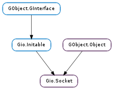

| static | new(family, type, protocol) |
| static | new_from_fd(fd) |
| accept(cancellable) | |
| bind(address, allow_reuse) | |
| check_connect_result() | |
| close() | |
| condition_check(condition) | |
| condition_timed_wait(condition, timeout, cancellable) | |
| condition_wait(condition, cancellable) | |
| connect(address, cancellable) | |
| connection_factory_create_connection() | |
| get_available_bytes() | |
| get_blocking() | |
| get_broadcast() | |
| get_credentials() | |
| get_family() | |
| get_fd() | |
| get_keepalive() | |
| get_listen_backlog() | |
| get_local_address() | |
| get_multicast_loopback() | |
| get_multicast_ttl() | |
| get_option(level, optname) | |
| get_protocol() | |
| get_remote_address() | |
| get_socket_type() | |
| get_timeout() | |
| get_ttl() | |
| is_closed() | |
| is_connected() | |
| join_multicast_group(group, source_specific, iface) | |
| leave_multicast_group(group, source_specific, iface) | |
| listen() | |
| receive(buffer, cancellable) | |
| receive_from(buffer, cancellable) | |
| receive_message(vectors, messages, flags, cancellable) | |
| receive_with_blocking(buffer, blocking, cancellable) | |
| send(buffer, cancellable) | |
| send_message(address, vectors, messages, flags, cancellable) | |
| send_to(address, buffer, cancellable) | |
| send_with_blocking(buffer, blocking, cancellable) | |
| set_blocking(blocking) | |
| set_broadcast(broadcast) | |
| set_keepalive(keepalive) | |
| set_listen_backlog(backlog) | |
| set_multicast_loopback(loopback) | |
| set_multicast_ttl(ttl) | |
| set_option(level, optname, value) | |
| set_timeout(timeout) | |
| set_ttl(ttl) | |
| shutdown(shutdown_read, shutdown_write) | |
| speaks_ipv4() |
| Name | Type | Flags | Description |
|---|---|---|---|
| blocking | bool | r/w | Whether or not I/O on this socket is blocking |
| broadcast | bool | r/w | Whether to allow sending to broadcast addresses |
| family | Gio.SocketFamily | r/w/c | The sockets address family |
| fd | int | r/w/c | The sockets file descriptor |
| keepalive | bool | r/w | Keep connection alive by sending periodic pings |
| listen-backlog | int | r/w | Outstanding connections in the listen queue |
| local-address | Gio.SocketAddress | r | The local address the socket is bound to |
| multicast-loopback | bool | r/w | Whether outgoing multicast packets loop back to the local host |
| multicast-ttl | int | r/w | Time-to-live of outgoing multicast packets |
| protocol | Gio.SocketProtocol | r/w/c | The id of the protocol to use, or -1 for unknown |
| remote-address | Gio.SocketAddress | r | The remote address the socket is connected to |
| timeout | int | r/w | The timeout in seconds on socket I/O |
| ttl | int | r/w | Time-to-live of outgoing unicast packets |
| type | Gio.SocketType | r/w/c | The sockets type |
None
| Name | Type | Access |
|---|---|---|
| parent_instance | GObject.Object | r |
Bases: GObject.Object, Gio.Initable
A Gio.Socket is a low-level networking primitive. It is a more or less direct mapping of the BSD socket API in a portable GObject.Object based API. It supports both the UNIX socket implementations and winsock2 on Windows.
Gio.Socket is the platform independent base upon which the higher level network primitives are based. Applications are not typically meant to use it directly, but rather through classes like Gio.SocketClient, Gio.SocketService and Gio.SocketConnection. However there may be cases where direct use of Gio.Socket is useful.
Gio.Socket implements the Gio.Initable interface, so if it is manually constructed by e.g. GObject.Object.new () you must call Gio.Initable.init () and check the results before using the object. This is done automatically in Gio.Socket.new () and Gio.Socket.new_from_fd (), so these functions can return None.
Sockets operate in two general modes, blocking or non-blocking. When in blocking mode all operations block until the requested operation is finished or there is an error. In non-blocking mode all calls that would block return immediately with a Gio.IOErrorEnum.WOULD_BLOCK error. To know when a call would successfully run you can call Gio.Socket.condition_check (), or Gio.Socket.condition_wait (). You can also use Gio.Socket.create_source () and attach it to a GLib.MainContext to get callbacks when I/O is possible. Note that all sockets are always set to non blocking mode in the system, and blocking mode is emulated in Gio.Socket.
When working in non-blocking mode applications should always be able to handle getting a Gio.IOErrorEnum.WOULD_BLOCK error even when some other function said that I/O was possible. This can easily happen in case of a race condition in the application, but it can also happen for other reasons. For instance, on Windows a socket is always seen as writable until a write returns Gio.IOErrorEnum.WOULD_BLOCK.
Gio.Socket s can be either connection oriented or datagram based. For connection oriented types you must first establish a connection by either connecting to an address or accepting a connection from another address. For connectionless socket types the target/source address is specified or received in each I/O operation.
All socket file descriptors are set to be close-on-exec.
Note that creating a Gio.Socket causes the signal %SIGPIPE to be ignored for the remainder of the program. If you are writing a command-line utility that uses Gio.Socket, you may need to take into account the fact that your program will not automatically be killed if it tries to write to %stdout after it has been closed.
| Parameters: |
|
|---|---|
| Raises: | |
| Returns: | a Gio.Socket or None on error. Free the returned object with GObject.Object.unref (). |
| Return type: |
Creates a new Gio.Socket with the defined family, type and protocol. If protocol is 0 (Gio.SocketProtocol.DEFAULT ) the default protocol type for the family and type is used.
The protocol is a family and type specific int that specifies what kind of protocol to use. Gio.SocketProtocol lists several common ones. Many families only support one protocol, and use 0 for this, others support several and using 0 means to use the default protocol for the family and type.
The protocol id is passed directly to the operating system, so you can use protocols not listed in Gio.SocketProtocol if you know the protocol number used for it.
| Parameters: | fd (int) – a native socket file descriptor. |
|---|---|
| Raises: | GLib.GError |
| Returns: | a Gio.Socket or None on error. Free the returned object with GObject.Object.unref (). |
| Return type: | Gio.Socket |
Creates a new Gio.Socket from a native file descriptor or winsock SOCKET handle.
This reads all the settings from the file descriptor so that all properties should work. Note that the file descriptor will be set to non-blocking mode, independent on the blocking mode of the Gio.Socket.
| Parameters: | cancellable (Gio.Cancellable or None) – a Gio.Cancellable or None |
|---|---|
| Raises: | GLib.GError |
| Returns: | a new Gio.Socket, or None on error. Free the returned object with GObject.Object.unref (). |
| Return type: | Gio.Socket |
Accept incoming connections on a connection-based socket. This removes the first outstanding connection request from the listening socket and creates a Gio.Socket object for it.
The socket must be bound to a local address with Gio.Socket.bind () and must be listening for incoming connections (Gio.Socket.listen ()).
If there are no outstanding connections then the operation will block or return Gio.IOErrorEnum.WOULD_BLOCK if non-blocking I/O is enabled. To be notified of an incoming connection, wait for the GLib.IOCondition.IN condition.
| Parameters: |
|
|---|---|
| Raises: | |
| Returns: | |
| Return type: |
When a socket is created it is attached to an address family, but it doesn’t have an address in this family. Gio.Socket.bind () assigns the address (sometimes called name) of the socket.
It is generally required to bind to a local address before you can receive connections. (See Gio.Socket.listen () and Gio.Socket.accept () ). In certain situations, you may also want to bind a socket that will be used to initiate connections, though this is not normally required.
allow_reuse should be True for server sockets (sockets that you will eventually call Gio.Socket.accept () on), and False for client sockets. (Specifically, if it is True, then Gio.Socket.bind () will set the %SO_REUSEADDR flag on the socket, allowing it to bind address even if that address was previously used by another socket that has not yet been fully cleaned-up by the kernel. Failing to set this flag on a server socket may cause the bind call to return Gio.IOErrorEnum.ADDRESS_IN_USE if the server program is stopped and then immediately restarted.)
| Raises: | GLib.GError |
|---|---|
| Returns: | True if no error, False otherwise, setting error to the error |
| Return type: | bool |
Checks and resets the pending connect error for the socket. This is used to check for errors when Gio.Socket.connect () is used in non-blocking mode.
| Raises: | GLib.GError |
|---|---|
| Returns: | True on success, False on error |
| Return type: | bool |
Closes the socket, shutting down any active connection.
Closing a socket does not wait for all outstanding I/O operations to finish, so the caller should not rely on them to be guaranteed to complete even if the close returns with no error.
Once the socket is closed, all other operations will return Gio.IOErrorEnum.CLOSED. Closing a socket multiple times will not return an error.
Sockets will be automatically closed when the last reference is dropped, but you might want to call this function to make sure resources are released as early as possible.
Beware that due to the way that TCP works, it is possible for recently-sent data to be lost if either you close a socket while the GLib.IOCondition.IN condition is set, or else if the remote connection tries to send something to you after you close the socket but before it has finished reading all of the data you sent. There is no easy generic way to avoid this problem; the easiest fix is to design the network protocol such that the client will never send data “out of turn”. Another solution is for the server to half-close the connection by calling Gio.Socket.shutdown () with only the shutdown_write flag set, and then wait for the client to notice this and close its side of the connection, after which the server can safely call Gio.Socket.close (). (This is what Gio.TcpConnection does if you call Gio.TcpConnection.set_graceful_disconnect (). But of course, this only works if the client will close its connection after the server does.)
| Parameters: | condition (GLib.IOCondition) – a GLib.IOCondition mask to check |
|---|---|
| Returns: | the GLib.IOCondition mask of the current state |
| Return type: | GLib.IOCondition |
Checks on the readiness of socket to perform operations. The operations specified in condition are checked for and masked against the currently-satisfied conditions on socket. The result is returned.
Note that on Windows, it is possible for an operation to return Gio.IOErrorEnum.WOULD_BLOCK even immediately after Gio.Socket.condition_check () has claimed that the socket is ready for writing. Rather than calling Gio.Socket.condition_check () and then writing to the socket if it succeeds, it is generally better to simply try writing to the socket right away, and try again later if the initial attempt returns Gio.IOErrorEnum.WOULD_BLOCK.
It is meaningless to specify GLib.IOCondition.ERR or GLib.IOCondition.HUP in condition; these conditions will always be set in the output if they are true.
This call never blocks.
| Parameters: |
|
|---|---|
| Raises: | |
| Returns: | |
| Return type: |
Waits for up to timeout microseconds for condition to become true on socket. If the condition is met, True is returned.
If cancellable is cancelled before the condition is met, or if timeout (or the socket’s Gio.Socket :timeout ) is reached before the condition is met, then False is returned and error, if non-None, is set to the appropriate value (Gio.IOErrorEnum.CANCELLED or Gio.IOErrorEnum.TIMED_OUT ).
If you don’t want a timeout, use Gio.Socket.condition_wait (). (Alternatively, you can pass -1 for timeout.)
Note that although timeout is in microseconds for consistency with other GLib APIs, this function actually only has millisecond resolution, and the behavior is undefined if timeout is not an exact number of milliseconds.
| Parameters: |
|
|---|---|
| Raises: | |
| Returns: | |
| Return type: |
Waits for condition to become true on socket. When the condition is met, True is returned.
If cancellable is cancelled before the condition is met, or if the socket has a timeout set and it is reached before the condition is met, then False is returned and error, if non-None, is set to the appropriate value (Gio.IOErrorEnum.CANCELLED or Gio.IOErrorEnum.TIMED_OUT ).
See also Gio.Socket.condition_timed_wait ().
| Parameters: |
|
|---|---|
| Raises: | |
| Returns: | |
| Return type: |
Connect the socket to the specified remote address.
For connection oriented socket this generally means we attempt to make a connection to the address. For a connection-less socket it sets the default address for Gio.Socket.send () and discards all incoming datagrams from other sources.
Generally connection oriented sockets can only connect once, but connection-less sockets can connect multiple times to change the default address.
If the connect call needs to do network I/O it will block, unless non-blocking I/O is enabled. Then Gio.IOErrorEnum.PENDING is returned and the user can be notified of the connection finishing by waiting for the GLib.IOCondition.OUT condition. The result of the connection must then be checked with Gio.Socket.check_connect_result ().
| Returns: | a Gio.SocketConnection |
|---|---|
| Return type: | Gio.SocketConnection |
Creates a Gio.SocketConnection subclass of the right type for socket.
| Returns: | the number of bytes that can be read from the socket without blocking or -1 on error. |
|---|---|
| Return type: | int |
Get the amount of data pending in the OS input buffer.
| Returns: | True if blocking I/O is used, False otherwise. |
|---|---|
| Return type: | bool |
Gets the blocking mode of the socket. For details on blocking I/O, see Gio.Socket.set_blocking ().
| Returns: | the broadcast setting on socket |
|---|---|
| Return type: | bool |
Gets the broadcast setting on socket ; if True, it is possible to send packets to broadcast addresses or receive from broadcast addresses.
| Raises: | GLib.GError |
|---|---|
| Returns: | None if error is set, otherwise a Gio.Credentials object that must be freed with GObject.Object.unref (). |
| Return type: | Gio.Credentials |
Returns the credentials of the foreign process connected to this socket, if any (e.g. it is only supported for Gio.SocketFamily.UNIX sockets).
If this operation isn’t supported on the OS, the method fails with the Gio.IOErrorEnum.NOT_SUPPORTED error. On Linux this is implemented by reading the %SO_PEERCRED option on the underlying socket.
Other ways to obtain credentials from a foreign peer includes the Gio.UnixCredentialsMessage type and Gio.UnixConnection.send_credentials () / Gio.UnixConnection.receive_credentials () functions.
| Returns: | a Gio.SocketFamily |
|---|---|
| Return type: | Gio.SocketFamily |
Gets the socket family of the socket.
| Returns: | the file descriptor of the socket. |
|---|---|
| Return type: | int |
Returns the underlying OS socket object. On unix this is a socket file descriptor, and on Windows this is a Winsock2 SOCKET handle. This may be useful for doing platform specific or otherwise unusual operations on the socket.
| Returns: | True if keepalive is active, False otherwise. |
|---|---|
| Return type: | bool |
Gets the keepalive mode of the socket. For details on this, see Gio.Socket.set_keepalive ().
| Returns: | the maximum number of pending connections. |
|---|---|
| Return type: | int |
Gets the listen backlog setting of the socket. For details on this, see Gio.Socket.set_listen_backlog ().
| Raises: | GLib.GError |
|---|---|
| Returns: | a Gio.SocketAddress or None on error. Free the returned object with GObject.Object.unref (). |
| Return type: | Gio.SocketAddress |
Try to get the local address of a bound socket. This is only useful if the socket has been bound to a local address, either explicitly or implicitly when connecting.
| Returns: | the multicast loopback setting on socket |
|---|---|
| Return type: | bool |
Gets the multicast loopback setting on socket ; if True (the default), outgoing multicast packets will be looped back to multicast listeners on the same host.
| Returns: | the multicast time-to-live setting on socket |
|---|---|
| Return type: | int |
Gets the multicast time-to-live setting on socket ; see Gio.Socket.set_multicast_ttl () for more details.
| Parameters: | |
|---|---|
| Raises: | |
| Returns: | success or failure. On failure, error will be set, and the system error value (errno or WSAGetLastError ()) will still be set to the result of the getsockopt () call. |
| Return type: |
Gets the value of an integer-valued option on socket, as with getsockopt (). (If you need to fetch a non-integer-valued option, you will need to call getsockopt () directly.)
The <gio/gnetworking.h> header pulls in system headers that will define most of the standard/portable socket options. For unusual socket protocols or platform-dependent options, you may need to include additional headers.
Note that even for socket options that are a single byte in size, value is still a pointer to a int variable, not a #guchar; Gio.Socket.get_option () will handle the conversion internally.
| Returns: | a protocol id, or -1 if unknown |
|---|---|
| Return type: | Gio.SocketProtocol |
Gets the socket protocol id the socket was created with. In case the protocol is unknown, -1 is returned.
| Raises: | GLib.GError |
|---|---|
| Returns: | a Gio.SocketAddress or None on error. Free the returned object with GObject.Object.unref (). |
| Return type: | Gio.SocketAddress |
Try to get the remove address of a connected socket. This is only useful for connection oriented sockets that have been connected.
| Returns: | a Gio.SocketType |
|---|---|
| Return type: | Gio.SocketType |
Gets the socket type of the socket.
| Returns: | the timeout in seconds |
|---|---|
| Return type: | int |
Gets the timeout setting of the socket. For details on this, see Gio.Socket.set_timeout ().
| Returns: | the time-to-live setting on socket |
|---|---|
| Return type: | int |
Gets the unicast time-to-live setting on socket ; see Gio.Socket.set_ttl () for more details.
| Returns: | True if socket is closed, False otherwise |
|---|---|
| Return type: | bool |
Checks whether a socket is closed.
| Returns: | True if socket is connected, False otherwise. |
|---|---|
| Return type: | bool |
Check whether the socket is connected. This is only useful for connection-oriented sockets.
| Parameters: |
|
|---|---|
| Raises: | |
| Returns: | |
| Return type: |
Registers socket to receive multicast messages sent to group. socket must be a Gio.SocketType.DATAGRAM socket, and must have been bound to an appropriate interface and port with Gio.Socket.bind ().
If iface is None, the system will automatically pick an interface to bind to based on group.
If source_specific is True, source-specific multicast as defined in RFC 4604 is used. Note that on older platforms this may fail with a Gio.IOErrorEnum.NOT_SUPPORTED error.
| Parameters: |
|
|---|---|
| Raises: | |
| Returns: | |
| Return type: |
Removes socket from the multicast group defined by group, iface, and source_specific (which must all have the same values they had when you joined the group).
socket remains bound to its address and port, and can still receive unicast messages after calling this.
| Raises: | GLib.GError |
|---|---|
| Returns: | True on success, False on error. |
| Return type: | bool |
Marks the socket as a server socket, i.e. a socket that is used to accept incoming requests using Gio.Socket.accept ().
Before calling this the socket must be bound to a local address using Gio.Socket.bind ().
To set the maximum amount of outstanding clients, use Gio.Socket.set_listen_backlog ().
| Parameters: |
|
|---|---|
| Raises: | |
| Returns: | Number of bytes read, or 0 if the connection was closed by the peer, or -1 on error |
| Return type: |
Receive data (up to size bytes) from a socket. This is mainly used by connection-oriented sockets; it is identical to Gio.Socket.receive_from () with address set to None.
For Gio.SocketType.DATAGRAM and Gio.SocketType.SEQPACKET sockets, Gio.Socket.receive () will always read either 0 or 1 complete messages from the socket. If the received message is too large to fit in buffer, then the data beyond size bytes will be discarded, without any explicit indication that this has occurred.
For Gio.SocketType.STREAM sockets, Gio.Socket.receive () can return any number of bytes, up to size. If more than size bytes have been received, the additional data will be returned in future calls to Gio.Socket.receive ().
If the socket is in blocking mode the call will block until there is some data to receive, the connection is closed, or there is an error. If there is no data available and the socket is in non-blocking mode, a Gio.IOErrorEnum.WOULD_BLOCK error will be returned. To be notified when data is available, wait for the GLib.IOCondition.IN condition.
On error -1 is returned and error is set accordingly.
| Parameters: |
|
|---|---|
| Raises: | |
| Returns: | Number of bytes read, or 0 if the connection was closed by the peer, or -1 on error |
| Return type: | int, address: Gio.SocketAddress |
Receive data (up to size bytes) from a socket.
If address is non-None then address will be set equal to the source address of the received packet. address is owned by the caller.
See Gio.Socket.receive () for additional information.
| Parameters: |
|
|---|---|
| Raises: | |
| Returns: | Number of bytes read, or 0 if the connection was closed by the peer, or -1 on error |
| Return type: | int, address: Gio.SocketAddress |
Receive data from a socket. This is the most complicated and fully-featured version of this call. For easier use, see Gio.Socket.receive () and Gio.Socket.receive_from ().
If address is non-None then address will be set equal to the source address of the received packet. address is owned by the caller.
vector must point to an array of Gio.InputVector structs and num_vectors must be the length of this array. These structs describe the buffers that received data will be scattered into. If num_vectors is -1, then vectors is assumed to be terminated by a Gio.InputVector with a None buffer pointer.
As a special case, if num_vectors is 0 (in which case, vectors may of course be None ), then a single byte is received and discarded. This is to facilitate the common practice of sending a single ‘\0’ byte for the purposes of transferring ancillary data.
messages, if non-None, will be set to point to a newly-allocated array of Gio.SocketControlMessage instances or None if no such messages was received. These correspond to the control messages received from the kernel, one Gio.SocketControlMessage per message from the kernel. This array is None-terminated and must be freed by the caller using GLib.free () after calling GObject.Object.unref () on each element. If messages is None, any control messages received will be discarded.
num_messages, if non-None, will be set to the number of control messages received.
If both messages and num_messages are non-None, then num_messages gives the number of Gio.SocketControlMessage instances in messages (ie: not including the None terminator).
flags is an in/out parameter. The commonly available arguments for this are available in the Gio.SocketMsgFlags enum, but the values there are the same as the system values, and the flags are passed in as-is, so you can pass in system-specific flags too (and Gio.Socket.receive_message () may pass system-specific flags out).
As with Gio.Socket.receive (), data may be discarded if socket is Gio.SocketType.DATAGRAM or Gio.SocketType.SEQPACKET and you do not provide enough buffer space to read a complete message. You can pass Gio.SocketMsgFlags.PEEK in flags to peek at the current message without removing it from the receive queue, but there is no portable way to find out the length of the message other than by reading it into a sufficiently-large buffer.
If the socket is in blocking mode the call will block until there is some data to receive, the connection is closed, or there is an error. If there is no data available and the socket is in non-blocking mode, a Gio.IOErrorEnum.WOULD_BLOCK error will be returned. To be notified when data is available, wait for the GLib.IOCondition.IN condition.
On error -1 is returned and error is set accordingly.
| Parameters: |
|
|---|---|
| Raises: | |
| Returns: | Number of bytes read, or 0 if the connection was closed by the peer, or -1 on error |
| Return type: |
This behaves exactly the same as Gio.Socket.receive (), except that the choice of blocking or non-blocking behavior is determined by the blocking argument rather than by socket ‘s properties.
| Parameters: |
|
|---|---|
| Raises: | |
| Returns: | Number of bytes written (which may be less than size ), or -1 on error |
| Return type: |
Tries to send size bytes from buffer on the socket. This is mainly used by connection-oriented sockets; it is identical to Gio.Socket.send_to () with address set to None.
If the socket is in blocking mode the call will block until there is space for the data in the socket queue. If there is no space available and the socket is in non-blocking mode a Gio.IOErrorEnum.WOULD_BLOCK error will be returned. To be notified when space is available, wait for the GLib.IOCondition.OUT condition. Note though that you may still receive Gio.IOErrorEnum.WOULD_BLOCK from Gio.Socket.send () even if you were previously notified of a GLib.IOCondition.OUT condition. (On Windows in particular, this is very common due to the way the underlying APIs work.)
On error -1 is returned and error is set accordingly.
| Parameters: |
|
|---|---|
| Raises: | |
| Returns: | Number of bytes written (which may be less than size ), or -1 on error |
| Return type: |
Send data to address on socket. This is the most complicated and fully-featured version of this call. For easier use, see Gio.Socket.send () and Gio.Socket.send_to ().
If address is None then the message is sent to the default receiver (set by Gio.Socket.connect ()).
vectors must point to an array of Gio.OutputVector structs and num_vectors must be the length of this array. (If num_vectors is -1, then vectors is assumed to be terminated by a Gio.OutputVector with a None buffer pointer.) The Gio.OutputVector structs describe the buffers that the sent data will be gathered from. Using multiple Gio.OutputVector s is more memory-efficient than manually copying data from multiple sources into a single buffer, and more network-efficient than making multiple calls to Gio.Socket.send ().
messages, if non-None, is taken to point to an array of num_messages Gio.SocketControlMessage instances. These correspond to the control messages to be sent on the socket. If num_messages is -1 then messages is treated as a None-terminated array.
flags modify how the message is sent. The commonly available arguments for this are available in the Gio.SocketMsgFlags enum, but the values there are the same as the system values, and the flags are passed in as-is, so you can pass in system-specific flags too.
If the socket is in blocking mode the call will block until there is space for the data in the socket queue. If there is no space available and the socket is in non-blocking mode a Gio.IOErrorEnum.WOULD_BLOCK error will be returned. To be notified when space is available, wait for the GLib.IOCondition.OUT condition. Note though that you may still receive Gio.IOErrorEnum.WOULD_BLOCK from Gio.Socket.send () even if you were previously notified of a GLib.IOCondition.OUT condition. (On Windows in particular, this is very common due to the way the underlying APIs work.)
On error -1 is returned and error is set accordingly.
| Parameters: |
|
|---|---|
| Raises: | |
| Returns: | Number of bytes written (which may be less than size ), or -1 on error |
| Return type: |
Tries to send size bytes from buffer to address. If address is None then the message is sent to the default receiver (set by Gio.Socket.connect ()).
See Gio.Socket.send () for additional information.
| Parameters: |
|
|---|---|
| Raises: | |
| Returns: | Number of bytes written (which may be less than size ), or -1 on error |
| Return type: |
This behaves exactly the same as Gio.Socket.send (), except that the choice of blocking or non-blocking behavior is determined by the blocking argument rather than by socket ‘s properties.
| Parameters: | blocking (bool) – Whether to use blocking I/O or not. |
|---|
Sets the blocking mode of the socket. In blocking mode all operations block until they succeed or there is an error. In non-blocking mode all functions return results immediately or with a Gio.IOErrorEnum.WOULD_BLOCK error.
All sockets are created in blocking mode. However, note that the platform level socket is always non-blocking, and blocking mode is a Gio.Socket level feature.
| Parameters: | broadcast (bool) – whether socket should allow sending to and receiving from broadcast addresses |
|---|
Sets whether socket should allow sending to and receiving from broadcast addresses. This is False by default.
| Parameters: | keepalive (bool) – Value for the keepalive flag |
|---|
Sets or unsets the %SO_KEEPALIVE flag on the underlying socket. When this flag is set on a socket, the system will attempt to verify that the remote socket endpoint is still present if a sufficiently long period of time passes with no data being exchanged. If the system is unable to verify the presence of the remote endpoint, it will automatically close the connection.
This option is only functional on certain kinds of sockets. (Notably, Gio.SocketProtocol.TCP sockets.)
The exact time between pings is system- and protocol-dependent, but will normally be at least two hours. Most commonly, you would set this flag on a server socket if you want to allow clients to remain idle for long periods of time, but also want to ensure that connections are eventually garbage-collected if clients crash or become unreachable.
| Parameters: | backlog (int) – the maximum number of pending connections. |
|---|
Sets the maximum number of outstanding connections allowed when listening on this socket. If more clients than this are connecting to the socket and the application is not handling them on time then the new connections will be refused.
Note that this must be called before Gio.Socket.listen () and has no effect if called after that.
| Parameters: | loopback (bool) – whether socket should receive messages sent to its multicast groups from the local host |
|---|
Sets whether outgoing multicast packets will be received by sockets listening on that multicast address on the same host. This is True by default.
| Parameters: | ttl (int) – the time-to-live value for all multicast datagrams on socket |
|---|
Sets the time-to-live for outgoing multicast datagrams on socket. By default, this is 1, meaning that multicast packets will not leave the local network.
| Parameters: | |
|---|---|
| Raises: | |
| Returns: | success or failure. On failure, error will be set, and the system error value (errno or WSAGetLastError ()) will still be set to the result of the setsockopt () call. |
| Return type: |
Sets the value of an integer-valued option on socket, as with setsockopt (). (If you need to set a non-integer-valued option, you will need to call setsockopt () directly.)
The <gio/gnetworking.h> header pulls in system headers that will define most of the standard/portable socket options. For unusual socket protocols or platform-dependent options, you may need to include additional headers.
| Parameters: | timeout (int) – the timeout for socket, in seconds, or 0 for none |
|---|
Sets the time in seconds after which I/O operations on socket will time out if they have not yet completed.
On a blocking socket, this means that any blocking Gio.Socket operation will time out after timeout seconds of inactivity, returning Gio.IOErrorEnum.TIMED_OUT.
On a non-blocking socket, calls to Gio.Socket.condition_wait () will also fail with Gio.IOErrorEnum.TIMED_OUT after the given time. Sources created with Gio.Socket.create_source () will trigger after timeout seconds of inactivity, with the requested condition set, at which point calling Gio.Socket.receive (), Gio.Socket.send (), Gio.Socket.check_connect_result (), etc, will fail with Gio.IOErrorEnum.TIMED_OUT.
If timeout is 0 (the default), operations will never time out on their own.
Note that if an I/O operation is interrupted by a signal, this may cause the timeout to be reset.
| Parameters: | ttl (int) – the time-to-live value for all unicast packets on socket |
|---|
Sets the time-to-live for outgoing unicast packets on socket. By default the platform-specific default value is used.
| Parameters: | |
|---|---|
| Raises: | |
| Returns: | |
| Return type: |
Shut down part of a full-duplex connection.
If shutdown_read is True then the receiving side of the connection is shut down, and further reading is disallowed.
If shutdown_write is True then the sending side of the connection is shut down, and further writing is disallowed.
It is allowed for both shutdown_read and shutdown_write to be True.
One example where this is used is graceful disconnect for TCP connections where you close the sending side, then wait for the other side to close the connection, thus ensuring that the other side saw all sent data.
| Returns: | True if this socket can be used with IPv4. |
|---|---|
| Return type: | bool |
Checks if a socket is capable of speaking IPv4.
IPv4 sockets are capable of speaking IPv4. On some operating systems and under some combinations of circumstances IPv6 sockets are also capable of speaking IPv4. See RFC 3493 section 3.7 for more information.
No other types of sockets are currently considered as being capable of speaking IPv4.